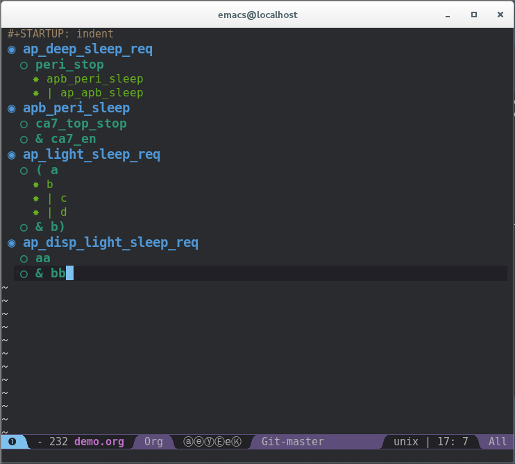
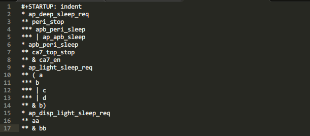

Code Generation
Code Generation
生成代码或者小环境，我比较喜欢的方法，我总结如下。
- 用JSON格式文件控制输入变量
- 使用Template Toolkit，控制展示出来的代码样式
闲言少叙，我们举一个例子。 假设一个场景，我们需要根据很多简单的逻辑表达式，来生成一个verilog的module。
我们把这个任务划分成几部分考虑。
- 逻辑表达式需要怎么样的格式呢？
- 需要哪些变量控制我们最后生成的module的样式？
- 用怎么样的方式，把这个流程串起来，同时能便于以后的维护呢？逻辑表达式的变化，要可以重新生成代码，同时不需要手动去修改。
第一个问题，逻辑表达式需要怎么样的格式？因为我对Emacs比较情有独钟，恰好我觉得使用org-mode 来书写简单的组合逻辑特别合适。先看一下下面的贴图感受一下。
上图是Emacs编辑器显示出来的，其实里面纯文本，是这样的：
处理这个不是很复杂，可以看作对树形节点的处理。
第二个问题，需要哪些变量控制我们最后生成的module的样式？我想到的有这么几个变量，我用JSON格式写出来：
{
"prefix_name":"demo",
"org_file":"doc/demo.org",
"outputs":"ap_disp_light_sleep_req,ap_light_sleep_req"
}
可能你会说，其实可以通过命令行的option来把变量加进去一下，比如：
run.pl -prefix_name demo -org_file doc/demo.org -outputs ap_disp_light_sleep_req,ap_light_sleep_req
确实可以，但是这样我们的脚本对于option的处理不灵活，如果以后加的option更多，我们的命令也就越来越长。
第三个问题，用怎么样的方式，把这个流程串起来，同时能便于以后的维护呢？这就是核心了，Perl脚本来做这些工作。
use JSON;
use Template;
...
sub read_json {
...
}
sub template_proc {
...
}
我们的模板文件其实，比较简单：
module [% prefix_name %]_ref_model (
[%- FOREACH item IN inputs.sort %]
input [% item %],
[%- END %]
[%- cnt =0 -%]
[%- total_cnt = outputs.size %]
[%- FOREACH item IN outputs.sort %]
[%- cnt = cnt + 1 %]
[%- IF (cnt == total_cnt) %]
output wire [% item %]
[%- ELSE %]
output wire [% item %],
[%- END%]
[%- END %]
);
[%- FOREACH item IN wires.sort %]
wire [% item %];
[%- END %]
[%- FOREACH item IN lines_info_ref %]
[%- IF (item.leafs.size == 0) %]
[%- ELSE %]
assign [% item.name %] = [% item.contents.join(' ') %];
[%- END %]
[%- END %]
endmodule
perl的源代码可以来这里找 。Enjoy yourself!
Comments